| 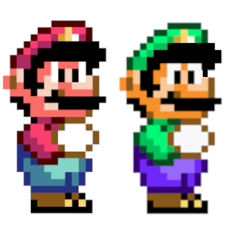
Mario e Luigi |
Mario e Luigi são os principais personagens jogáveis. No modo de dois jogadores, o Mario é controlado pelo jogador 1 e Luigi é controlado pelo jogador 2. Se Mario perder uma vida ou completar um nível no modo de dois jogadores, Luigi entra em jogo até que ele faça o mesmo. Os dois também podem compartilhar vidas extras no mapa do mundo. Os dois têm mecânica idêntica. |
| 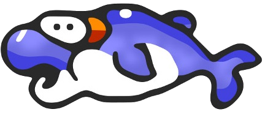
Dolphin |
Uma criatura do mar que dá carona ao Mario em certos níveis de água. Dolphins se movem em arcos de salto ou podem pular para cima e para baixo. Em versões japonesas do jogo, eles podem ser comidos por um Yoshi, enquanto não conseguem ser comidos em versões internacionais. Eles aparecem no Vanilla Secret 3 e uma pequena seção no final da Chocolate Island 1. | 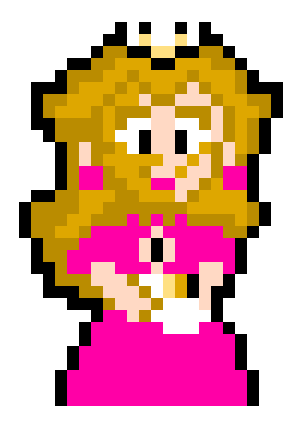
Princesa Toadstool |
A princesa do Reino de Cogumelos, que é sequestrada por Bowser durante as férias. O principal objetivo do jogo é resgatá-la de Bowser. | 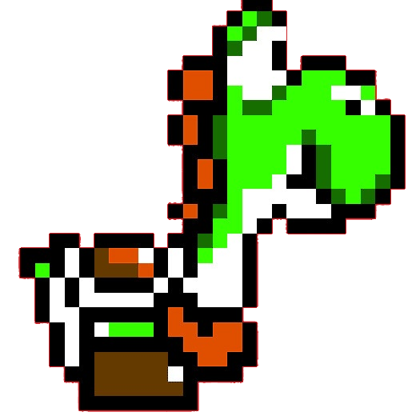
Yoshi |
Companheiro de Mario que atende aos pedidos de assistência. Depois que é libertado de seu ovo, ele pode andar com Mario e comer inimigos. |
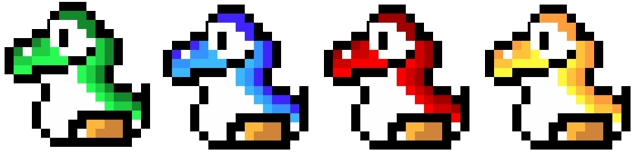
| Yoshi verde | O Yoshi verde é capaz de comer inimigos usando sua língua longa e saltar sobre inimigos cravados sem se machucar, bem como atravessar Munchers. Ele pode usar a energia de um casca de Koopa dependendo da cor da concha. | Yoshi vermelho | O Yoshi vermelho pode cuspir qualquer casca de Koopa na forma de três bolas de fogo. Essas bolas de fogo transformam uma variedade de inimigos em moedas. Eles são encontrados como Baby Yoshis em Star World 1 ou Star World 4. | Yoshi azul | Yoshi azul pode voar independentemente de que cor o casco de Koopa está em sua boca. Além disso, um Yoshi pode se tornar azul Yoshi se ele tocar as asas de Yoshi, que aparecem em algumas fases e atuam como atalhos até o final do estágio. Eles são encontrados como Baby Yoshis em Star World 2. | Yoshi amarelo | Yoshi amarelo pode criar pequenas nuvens de areia quando eles baterem no chão enquanto carregam um casco de koopa em sua boca, derrotando os inimigos dentro do intervalo da nuvem. Eles são encontrados como Baby Yoshis em Star World 3 e Star World 5. |


| Big Boo | Um gigante Boo Buddy. Não pode ser pisado, mas pode saltá-lo com giro. | Bob-omb | Uma bomba andando com um fusível curto. Bob-ombs são portáteis, uma vez que Mario pisá-los. Eles também aparecem em bolhas. | Boo Budies | Um fantasma tímido que pára de se mover quando Mario olha para ele. É impermeável a bolas de fogo e capas. Não pode ser pisado, mas pode saltá-lo com giro. | Brother Sumô | Uma tartaruga gorda que pisa o chão e põe fogo a tudo abaixo dele. | Chargin' Chuck | Uma tartaruga vestida com equipamento de futebol que tentam bloquear o caminho do Mario. Todos os tipos de Chargin' Chucks levam três pisos para derrotá-los.
|
Dino Rhino | Um dinossauro ceratopsiano de movimento lento. Quando pular nele, se transforma em um Mini-Rhino. | Eeries | Um fantasma de dinossauro que voa em padrões de ziguezague. Eeries são impermeáveis à maioria dos ataques | Goomba | Uma criatura redonda e parecida com castanhas. Depois de pisar um Goomba, Mario pode levá-lo por uma curta distância e jogá-lo. Alguns Goombas vêm flutuando em bolhas. | Koopa |
|
Magikoopa | Um feiticeiro de Koopa em uma túnica azul. Ele transforma Rotating Blocks em vários inimigos e itens e se teletransporta | Mini-Rhino | Um pequeno Dino-Rhino que expira fogo. | Muncher | Uma planta negra invencível. | Ouriço do Mar | Um ouriço com pontas que bloqueia ciclicamente as passagens debaixo d'água. | Peixe Rip | Um peixe adormecido que perseguirá o Mario se for despertado. | Planta Piranha | Uma planta carnívora que vive em um tubo. Não pode ser pisado, mas pode saltá-lo com giro. Pode ser derrotado com bolas de fogo, capas ou Yoshi. | Rex | Um dinossauro azul que se torna menor e mais rápido quando pisado. Quando pisado depois disso, é derrotado. | Super Koopa | Um Koopa voadora sem concha.
|
Thwomp | Uma grande pedra que cai quando Mario se aproxima. Não pode ser pisado, mas pode saltá-lo com giro. | Toupeira Monty | Uma toupeira que aparece das montanhas e do chão e pode perseguir o Mario. | Wiggler | Uma lagarta amarela. Quando Mario pula em sua cabeça, fica vermelho e se move mais rápido. É impermeável a bolas de fogo. |
| 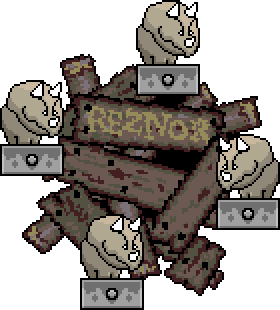
Reznor |
Um triceratops que cospe fogo que se aparece em um conjunto de quatro. Reznors guardam as saídas de todas as fortalezas. | 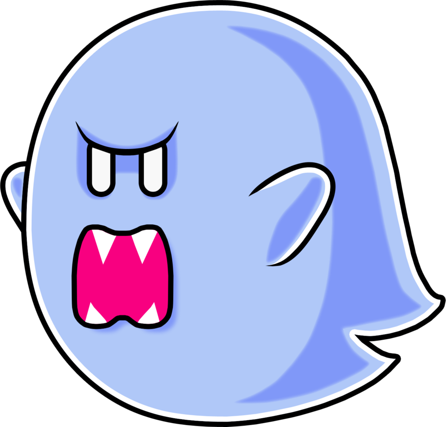
The Big Boo |
O chefe de Donut Secret House. Ele se move ao redor da sala invisível, então de repente reaparece. | 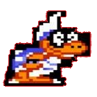
Iggy Koopa |
Chefe do castelo #1, localizado em Yoshi's Island. Ele tenta empurrar Mario em uma piscina de lava enquanto cospe bolas de fogo | 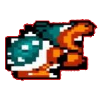
Morton Koopa Jr. |
Chefe do castelo #2, localizado em Donut Plains. Ele corre as paredes da sua sala, tentando cair no Mario. | 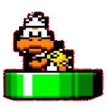
Lemmy Koopa |
Chefe do castelo #3, localizado em Vanilla Dome. Ele aparece aleatoriamente de sete tubos junto com duas versões falsas de si mesmo. | 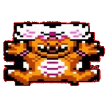
Ludwig von Koopa |
Chefe do castelo #4, localizado em Twin Bridges. Ele gira ao redor da sala em sua concha, parando para atirar bolas de fogo. | 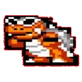
Roy Koopa |
Chefe do castelo #5, localizado na Forest of Illusion. Como Morton, ele percorre as paredes do seu quarto, tentando cair em Mario. | 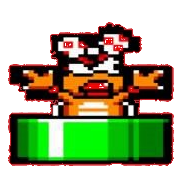
Wendy O. Koopa |
Chefe do castelo #6, localizado em Chocolate Island. Como Lemmy, ela aparece aleatoriamente de sete canos junto com duas versões falsas de si mesma. | 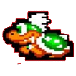
Larry Koopa |
Chefe do castelo #7, localizado no Valley of Bowser. Como Iggy, ele tenta empurrar Mario para uma piscina de lava enquanto cospe bolas de fogo. | 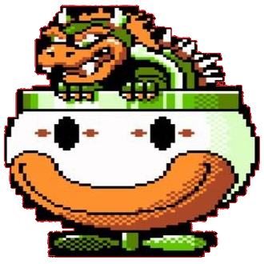
Bowser |
O chefe final. Ele paira acima em seu Koopa Clown Car, jogando Mechakoopas e Big Steelies. |
 Super Mario World
Super Mario World